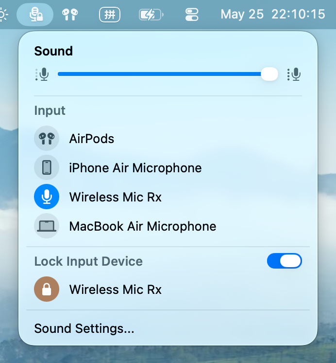
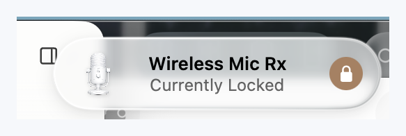

Your preferred microphone is saved locally as the device to keep active.
A tiny macOS menu bar utility
Keep your Mac on the microphone you chose.
AudioInputLocker adds a Sound-style input menu to the menu bar and can lock your preferred input device, so AirPods, System Settings, and reconnecting gear do not quietly take over your microphone.

Lock mode in action.
Pick a real-world interruption, then step through what happens: the system input changes, AudioInputLocker catches it, and the locked microphone becomes active again.
Current system input
Wireless Mic Rx
Lock mode is enabled. AudioInputLocker watches the default input route.
macOS tries to switch the input to AirPods.
AudioInputLocker switches the default input back and shows a short HUD.
Most common
AirPods can become the default microphone when they connect or move between Apple devices. Lock mode keeps your selected mic in place without changing what you listen through.
Small by design.
AudioInputLocker stays close to macOS conventions: one menu, one clear lock, and no account, analytics, or network dependency.
Native menu bar flow
Switch input devices from a compact Sound-style popover without opening System Settings.
Local Core Audio control
Device enumeration, selection, volume, and lock restoration all run on your Mac.
English and Chinese
The app follows the system language and currently supports English and Simplified Chinese.
Real app surfaces.
The public preview includes the menu popover, lock state, and the transient HUD shown after a restore.
Menu popover
Input list, volume slider, and the locked device in one place.

Restore HUD
A short visual confirmation when the app restores your preferred input.
Open source preview.
The project is MIT licensed. Preview builds are available on GitHub Releases, and the most transparent path is still building from source.